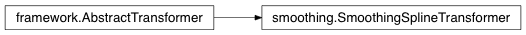

Navigation
index
modules
|
pysf 0.0.4 documentation
»
Table Of Contents
UML diagrams
All predictors & transformers
Predictors
Predictors (names only)
Transformers
Transformers (names only)
Indices and tables
This Page
Show Source
Quick search
UML diagrams
¶
All predictors & transformers
¶
Predictors
¶
Predictors (names only)
¶
Transformers
¶

Transformers (names only)
¶
Indices and tables
¶
Index
Module Index
Search Page
Navigation
index
modules
|
pysf 0.0.4 documentation
»
![Inheritance diagram of pysf.predictors.tuning.TuningOverallPredictor, pysf.predictors.tuning.TuningTimestampMultiplexerPredictor, pysf.predictors.forest.MultiCurveRandomForestPredictor, pysf.predictors.kernels.MultiCurveKernelsPredictor, pysf.predictors.framework.SingleCurveSeriesPredictor, pysf.predictors.framework.MultiCurveTabularPredictor, pysf.predictors.framework.MultiCurveTabularWindowedPredictor, pysf.predictors.framework.SingleCurveTabularWindowedPredictor, pysf.predictors.baselines.SeriesLinearInterpolator, pysf.predictors.baselines.ZeroPredictor, pysf.predictors.baselines.SeriesMeansPredictor, pysf.predictors.baselines.TimestampMeansPredictor, pysf.transformers.framework.AbstractTransformer, pysf.transformers.smoothing.SmoothingSplineTransformer, pysf.predictors.lstm.MultiCurveWindowedLstmPredictor](_images/inheritance-3a9865a3f59b7ddde54b3f3881848d35ff9730c1.png)
![Inheritance diagram of pysf.predictors.tuning.TuningOverallPredictor, pysf.predictors.tuning.TuningTimestampMultiplexerPredictor, pysf.predictors.forest.MultiCurveRandomForestPredictor, pysf.predictors.kernels.MultiCurveKernelsPredictor, pysf.predictors.framework.SingleCurveSeriesPredictor, pysf.predictors.framework.MultiCurveTabularPredictor, pysf.predictors.framework.MultiCurveTabularWindowedPredictor, pysf.predictors.framework.SingleCurveTabularWindowedPredictor, pysf.predictors.baselines.SeriesLinearInterpolator, pysf.predictors.baselines.ZeroPredictor, pysf.predictors.baselines.SeriesMeansPredictor, pysf.predictors.baselines.TimestampMeansPredictor, pysf.predictors.lstm.MultiCurveWindowedLstmPredictor](_images/inheritance-a958b31256de66001145bff302089b8fb7fa7132.png)
![Inheritance diagram of pysf.predictors.tuning.TuningOverallPredictor, pysf.predictors.tuning.TuningTimestampMultiplexerPredictor, pysf.predictors.forest.MultiCurveRandomForestPredictor, pysf.predictors.kernels.MultiCurveKernelsPredictor, pysf.predictors.framework.SingleCurveSeriesPredictor, pysf.predictors.framework.MultiCurveTabularPredictor, pysf.predictors.framework.MultiCurveTabularWindowedPredictor, pysf.predictors.framework.SingleCurveTabularWindowedPredictor, pysf.predictors.baselines.SeriesLinearInterpolator, pysf.predictors.baselines.ZeroPredictor, pysf.predictors.baselines.SeriesMeansPredictor, pysf.predictors.baselines.TimestampMeansPredictor, pysf.predictors.lstm.MultiCurveWindowedLstmPredictor](_images/inheritance-93b7d27a4782a4b4ae1b0a726b04451462d5f687.png)